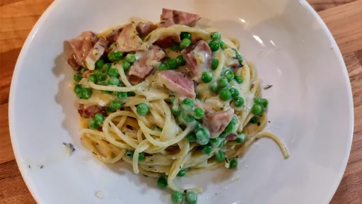

Ham and peas pasta with garlic parmesan cream sauce

The perfect way to use up all your leftover ham! It is amazingly creamy, comforting and kid-friendly!
Servings: 4
Total: 30 mins
Ingredients
- 8 oz spaghetti
- ¼ cup unsalted butter
- 4 cloves garlic, minced
- 2 tbsp all-purpose flour
- 1 cup chicken broth, or more as needed
- 1 tsp dried thyme
- ½ tsp dried basil
- ½ cup cream
- ½ cup freshly grated Parmesan
- Kosher salt and freshly ground black pepper, to taste
- 2 cups chopped ham
- 1 cup frozen sweet peas
- 2 tbsp chopped fresh parsley leaves
Instructions
- In a large pot of boiling salted water, cook
pasta8 oz
according to package instructions; drain well.
- To make the
garlic4 cloves
parmesan cream sauce, melt butter¼ cup
in the skillet skillet over medium heat. Add garlic4 cloves
, and cook, stirring frequently, until fragrant, about 1-2 minutes. Whisk in flour2 tbsp
until lightly browned, about 1 minute.
- Gradually whisk in
chicken broth1 cup
, thyme1 tsp
and basil½ tsp
. Cook, whisking constantly, until incorporated, about 1-2 minutes. Stir in half and half½ cup
and Parmesan½ cup
until slightly thickened, about 1-2 minutes. If the mixture is too thick, add more half and half½ cup
as needed; season with salt and pepper, to taste.
- Stir in spaghetti,
ham2 cups
and peas1 cup
, and gently toss to combine.
- Serve immediately, garnished with parsley, if desired.
damndelicious.net
Short Link
Long Link